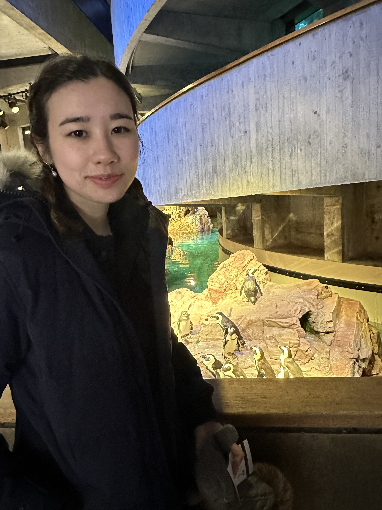

About Me
Hello! I'm Rachael Close, a Computer Science student at Cornell University, College of Engineering, with a passion for machine learning, robotics, and computer vision. I'm on track to complete my Bachelor of Science in May 2025. Throughout my academic journey, I've been a Dean's List Recipient and immersed myself in courses ranging from Analysis of Algorithms and Data Structures to Machine Learning and Computer Vision.
My technical experiences span across machine learning internships and robotics research, where I've applied my skills in Python, Docker, and various AI technologies to real-world problems. Outside the classroom, I'm an active member of Women in Computing at Cornell and enjoy tennis and figure skating.